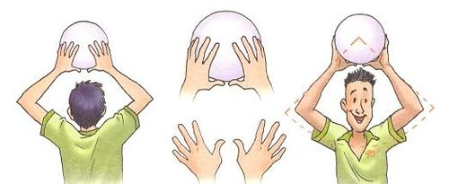
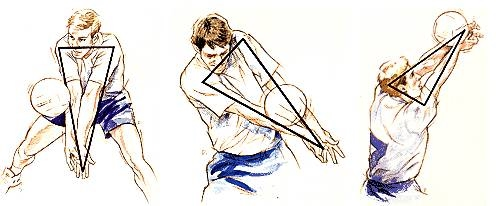
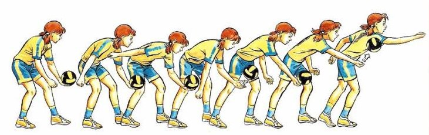
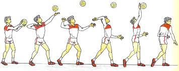
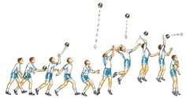
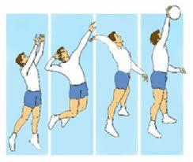
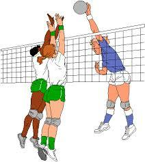

Cuando queremos introducirnos a un deporte es fundamental conocer los fundamentos técnicos para reconocerlos durante el juego a continuación vamos a describir los que correponden al voleibol.
Golpe de dedos
Es un golpe que se realiza con las manos y los dedos formando un triángulo o rombo auxiliados por los miembros superiores e inferiores en la ejecución en acciones de juego en pases, defensas y colocación o armado en ataques y muy poco en recepción del saque.

Golpe de antebrazo
Se realiza con las manos juntas superponiendo dedos y manos en forma simétricas y los antebrazos son la zona de impacto también ayudados por los miembros superiores e inferiores en su ejecución actúan en el juego en recepción del saque y pases principalmente y muy poco en colocación o armado en ataques.

Saque de abajo
Los saques se realizan en la parte posterior y fuera del campo de juego en este caso se sostiene la pelota con la mano que no va ejecutar mientras que la otra mano pega el balón desde abajo con el talón de la mano. Este saque es más común en principiantes.

Saque de arriba o tenis
Es el saque más utilizado, se ejecuta a pie firme golpeando con la mano hábil desde arriba con toda la superficie de la mano y el lanzamiento de la pelota se ejecuta con la mano no hábil.

Saque en suspensión
Tiene la misma forma de ejecución que la anterior pero con salto es como un remate desde la zona de saque. Este saque es común en el ámbito profesional.

El remate
Es un fundamento técnico usado en el ataque se inicia con la colocación o armado de la pelotas con trayectoria altas se golpea con toda la superficie de la mano hábil, tiene cuatro fases: carrera, salto, golpe y caída, el golpe se realiza en su máxima altura por encima de la red y se ejecuta con potencia para que los adversarios no puedan defender.

El bloqueo
Es una técnica que se realiza luego de un salto y juntando ambas manos, su objetivo es interceptar el balón que viene del otro lado del campo. En lo posible tener extendidos los dedos para tener mayor superficie de contacto, se puede utilizar como una acción de ataque anotando punto en caso de que el balón caiga en el campo contrario y defensa para cubrir su campo de juego o disminuyendo la velocidad del balón y poder defender con menos dificultad.

Imagen tomada de mundo deportivo